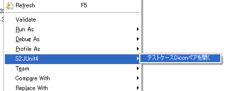

Welcome to the "s2junit4plugin" project.
概要
S2JUnit4PluginはS2JUnit4,S2Unitでのテストを支援するEclipseプラグインです。 Quick Junitプラグインをベースに開発されており使い方はほぼ同じですが、キーバインドがかぶるため同居は非推奨です。
セットアップ
Eclipse3.3および3.4,JDK5.0以降で動作します。次の更新サイトから「S2JUnit4Plugin」を選択してインストールしてください。
使い方
S2JUnit4PluginはJUnitの起動およびクラスとテストケースクラスおよびテストケースクラスとテストケースdiconのエディタ切り替えを簡単に行うためのEclipseプラグインです。 テストケースクラスとテストケースdiconのエディタ切り替えはS2JUnit4のみ有効です。diconのエディタとしてはKijimunaがあります。
Javaファイルから起動する
diconファイルから起動する
S2JUnit4Pluginは次のコマンドからなります。
| コマンド名 | ショートカットキー | 説明 |
|---|---|---|
| テスティングペアを開く | Ctrl+9 | クラスとテストケースクラスのエディタを切り替える |
| Open TestCase Dicon Pair | Ctrl+Shift+9 | テストケースクラスからテストケースdiconへエディタを切り替える |
| Open TestCase Class Pair | Ctrl+Shift+9 | テストケースdiconからテストケースクラスへエディタを切り替える |
| JUnit テスト | Ctrl+0 | 選択項目をJUnitで起動する。メソッド単位でも実行できます。 |
| JUnit デバッグ | Ctrl+Shift+0 | 選択項目をJUnitでデバッグする |
これらのコマンドは「S2JUnit4」サブメニューから起動することができます。
- Javaエディタがアクティブ時の「編集」―「Quick JUnit」メニュー
- Javaエディタでの「S2JUnit4」ポップアップメニュー
- diconエディタでの「S2JUnit4」ポップアップメニュー
- パッケージエクスプローラでの「S2JUnit4」ポップアップメニュー
- アウトラインビューでの「S2JUnit4」ポップアップメニュー
- 対応するテストケースクラスが存在しない場合は、メッセージボックスがポップアップします。
- OKをクリックするとウィザードが開きます。
- Nextをクリックすると次のウィザードが開きます。
テストケースクラスが存在しない場合はウィザードを使って新規に作成することができます。
上記ウイザードでfindById, findByIdVersion,findAllOrderByIdの３つのメソッドを選択すると生成されるテストケースクラスは以下のようになります。ServiceとDaoに対して生成した場合は自動バインディングフィールドがprivateフィールド宣言されます。 以下の例だとempServiceがそうです。そのほかstatic import宣言、RunWithアノテーションが最初から付加されていますので、すぐにテストを実行して失敗になることを確認できます。 これによりテスト失敗→コード修正→テスト成功のステップがスムーズになります。
package aaa.service;
import static org.seasar.framework.unit.S2Assert.*;
import org.junit.runner.RunWith;
import org.seasar.framework.unit.Seasar2;
@RunWith(Seasar2.class)
public class EmpServiceTest {
private EmpService empService;
public void testFindById() {
fail("Not yet implemented");
}
public void testFindByIdVersion() {
fail("Not yet implemented");
}
public void testFindAllOrderById() {
fail("Not yet implemented");
}
}
S2Unitを選択して生成した場合は以下のようになります。
package aaa.service;
import org.seasar.extension.unit.S2TestCase;
public class EmpServiceTest extends S2TestCase {
public void testFindById() {
fail("Not yet implemented");
}
public void testFindByIdVersion() {
fail("Not yet implemented");
}
public void testFindAllOrderById() {
fail("Not yet implemented");
}
}
テストケースdiconが存在しない場合はウィザードを使って新規に作成することができます。
生成されるテストケースdiconは以下のようになります。
<?xml version="1.0" encoding="UTF-8"?> <!DOCTYPE components PUBLIC "-//SEASAR//DTD S2Container 2.4//EN" "http://www.seasar.org/dtd/components24.dtd"> <components> </components>
なおテストケースdiconをもとにテストケースクラスを生成することはできません。つまりテストケースクラスが無い状態でテストケースdiconファイル上でCtrl+Shift+9しても何も起こりません。
ウィザードでテストケースクラス、テストケースdiconを生成する場合のデフォルトの保存場所や生成タイプは「ウィンドウ」―「設定」―「S2JUnit4」で 変更することができます。
テストケースクラスのネーミングルールも変更することができます。
変数${package}は実装コードのパッケージ名，${type}は実装コードの（パッケージ名を除いた）クラス名を表します．いくつかネーミングルールの例を書いておきます．
| ネーミングルール | 実装クラスの例 | テストケース |
|---|---|---|
${package}.${type}Test |
com.foo.Foo |
com.foo.FooTest |
Foo |
FooTest |
好みに合わせてネーミングルールを設定してください．
ネーミングルールが複数指定されていた場合など，複数のテスティングペアが存在するときがあります．そのときは，次のようなポップアップが表示されますのでそこから選択していただければOKです．
メーリングリスト
- seasar-user
-
Seasar2および関連プロダクトの利用者のためのメーリングリストです。
S2JUnit4Pluginを利用していて疑問に思ったことや困ったこと、要望などはこちらへ。
件名に[S2JUnit4Plugin]を含めていただけると幸いです。またEclipseのエラーログに何か出ている場合はその情報も送っていただけると問題解決がスムーズになります。 - seasar-dev
- Seasar2および関連プロダクト開発者のためのメーリングリストです。
トラッキング
- JIRA
- S2JUnit4PluginのバグはJIRAで管理されています。
Subversionリポジトリ
S2JUnit4Plugin のソースコードは、seasar.org のSubversionリポジトリで公開されています。
どなたでもアクセスしてソースコードを閲覧することができます。
(以下のリンクをクリックするとWeb経由でもソースコードを閲覧できます)
参考サイト
S2JUnit4Plugin は、以下を中心として仕様検討を進めています。